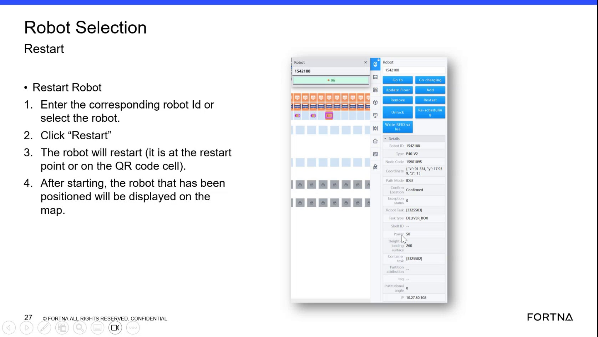

| Procedure ID | proc_check_agb_hv_charge_percentage_in_the_power_section_v1 |
|---|---|
| Title | Check AGB HV Charge Percentage In The Power Section |
| Procedure Type | diagnostic |
| Primary Role | L1_support |
| Support Safe | Yes |
| Validation Status | needs_sme_review |
| Merge Status | source_finalized |
Determine the current HV charge percentage for a selected AGB by selecting the AGB in the interface and reading the value shown in the small power section.
Use this procedure when troubleshooting or checking battery state for an AGB and you need to see the HV charge percentage displayed in the interface.
Responsible role: L1_support
Instruction:
Select the AGB in the interface.
Expected result:
The AGB is selected and its details area is available for inspection.
Screens / Images:

Stop or Escalate If:
Responsible role: L1_support
Instruction:
Locate the small section labeled power for the selected AGB.
Expected result:
The power section is visible for the selected AGB.
Screens / Images:
Stop or Escalate If:
Responsible role: L1_support
Instruction:
Read the displayed HV charge percentage from the power section.
Expected result:
A numeric HV charge percentage is visible in the power section.
Screens / Images:
Stop or Escalate If:
Responsible role: L1_support
Instruction:
Record the observed percentage value, such as the example value of 50% mentioned in the training discussion.
Expected result:
The displayed HV charge percentage is documented.
Stop or Escalate If: